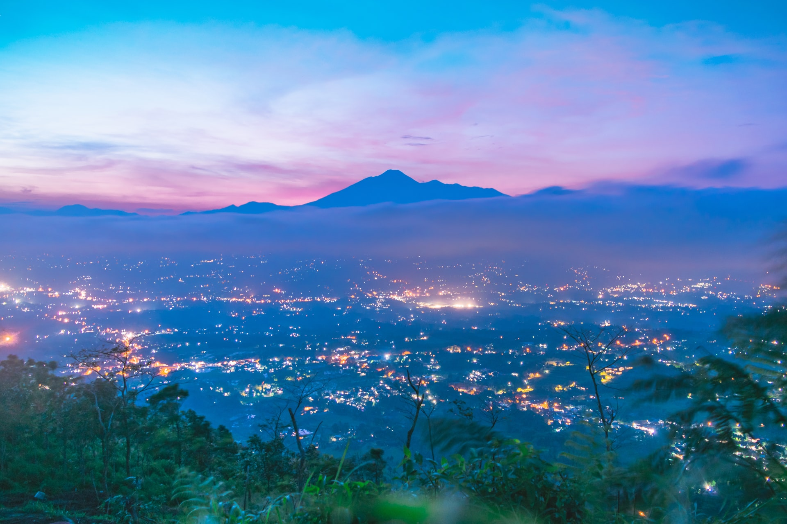
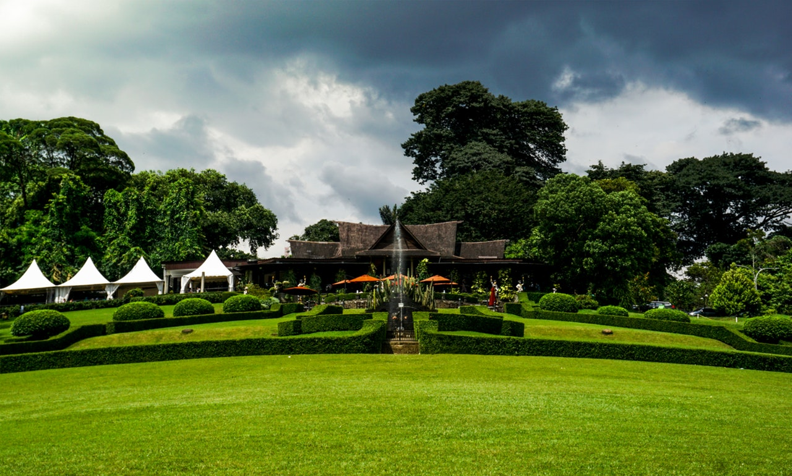
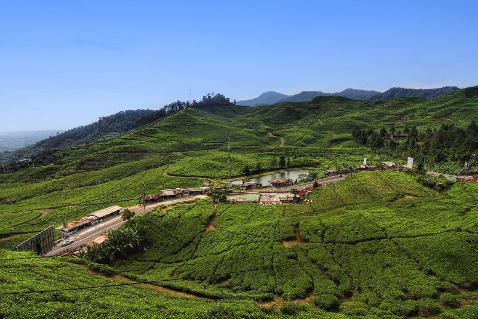

Sejarah

Kota Bogor mempunyai luas wilayah 118,5 km². Di kota ini juga mengalir beberapa sungai yang
permukaan
airnya jauh di bawah permukaan dataran, yaitu: Ci (Sungai) Liwung, Ci Sadane, Ci Pakancilan, Ci
Depit,
Ci Parigi, dan Ci Balok. Topografi yang demikian menjadikan Kota Bogor relatif aman dari bahaya
banjir
alami.
Bogor ditilik dari sejarahnya adalah tempat berdirinya Kerajaan Hindu Tarumanagara di abad ke
lima.
Beberapa kerajaan lainnya lalu memilih untuk bermukim di tempat yang sama dikarenakan daerah
pegunungannya yang secara alamiah membuat lokasi ini mudah untuk bertahan terhadap ancaman
serangan,
dan
di saat yang sama adalah daerah yang subur serta memiliki akses yang mudah pada sentra-sentra
perdagangan saat itu. Namun hingga kini, berdasarkan penelitian yang dilakukan oleh beberapa
arkeolog
ternama seperti Prof. Uka Tjandrasasmita, keberadaan tempat dan situs penting yang menyatakan
eksistensi
kerajaan tersebut.
Geografis

Kota Bogor terletak pada ketinggian 190 sampai 330 m dari permukaan laut. Udaranya relatif sejuk
dengan suhu udara rata-rata setiap bulannya adalah 26 °C dan kelembaban udaranya kurang lebih
70%.
Suhu rata-rata terendah di Bogor adalah 21,8 °C, paling sering terjadi pada Bulan Desember dan
Januari. Arah mata angin dipengaruhi oleh angin muson. Bulan Mei sampai Maret dipengaruhi angin
muson barat.
Kemiringan Kota Bogor berkisar antara 0–15% dan sebagian kecil daerahnya mempunyai kemiringan
antara
15–30%. Jenis tanah hampir di seluruh wilayah adalah latosol coklat kemerahan dengan kedalaman
efektif tanah lebih dari 90 cm dan tekstur tanah yang halus serta bersifat agak peka terhadap
erosi.
Bogor terletak pada kaki Gunung Salak dan Gunung Gede sehingga sangat kaya akan hujan orografi.
Angin laut dari Laut Jawa yang membawa banyak uap air masuk ke pedalaman dan naik secara
mendadak di
wilayah Bogor sehingga uap air langsung terkondensasi dan menjadi hujan. Hampir setiap hari
turun
hujan di kota ini dalam setahun (70%) sehingga dijuluki "Kota Hujan". Keunikan iklim lokal ini
dimanfaatkan oleh para perencana kolonial Belanda dengan menjadikan Bogor sebagai pusat
penelitian
botani dan pertanian, yang diteruskan hingga sekarang.
Wisata
Kota Bogor memiliki banyak ikon wisata, salah satunya Kebun Raya Bogor yang dikelilingnya mulai
dijadikan sarana olahraga baru "Jogging" oleh warga Bogor semenjak wali kota Bima Arya membenahi
pedestrian di sekeliling Kebun Raya Bogor menjadi lebih lebar dan lebih menarik.
Kebun Raya

Kebun Raya Bogor atau Kebun Botani Bogoradalah sebuah kebun botani besar yang terletak di
Kota
Bogor, Indonesia. Luasnya mencapai hektar dan memiliki 15.000 jenis koleksi pohon dan
tumbuhan.
Saat ini Kebun Raya Bogor ramai dikunjungi sebagai tempat wisata, terutama hari Sabtu dan
Minggu. Tiket masuknya Rp 15.000. Di sekitar Kebun Raya Bogor tersebar pusat-pusat keilmuan
yaitu Herbarium Bogoriense dan Museum Zoologi Bogor.
Puncak

Puncak adalah sebuah daerah wisata pegunungan yang termasuk ke dalam wilayah Kabupaten Bogor
dan
Kabupaten Cianjur, Provinsi Jawa Barat. Puncak terletak 70 km sebelah selatan Jakarta.[1]
Wilayah Puncak terletak di kaki dan lereng pegunungan Gede-Pangrango dan sebagian besar
merupakan bagian dari kawasan Taman Nasional Gede Pangrango. Daerah ini terkenal sebagai
daerah
wisata pegunungan baik bagi wisatawan domestik maupun mancanegara. Wilayah Puncak dikenal
sebagai tempat peristirahatan penduduk Jakarta karena kesejukan dan keindahan alamnya, serta
merupakan daerah perkebunan teh yang dibangun pemerintah kolonial Belanda yang saat ini
merupakan perkebunan teh milik PT Perkebunan Nusantara VIII Gunung Mas.